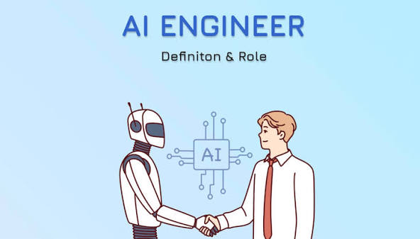

AI Engineer
Builds software that learns from data, such as chatbots, recommendation systems and image recognition tools.
key skills
- Python
- Machine Learning
- Maths and statistics
Learning path:BSComputer Science or Software Engineering, with courses in AI and data science.